Blockchain, Bitcoin, Ethereum
Globális konszenzus... avagy úton Skynet felé? 😈
2016. április 8.
Madarasi Hargita
Szilágyi Péter
Ethereum Core Developer
 Ez a bemutató a 10. Hargitai Informatikus (diák) Találkozó-ra készült és
Vinay Gupta: Programmable Blockchains in Context
munkáját használta kiindulási forrásként. Angol fordítás.
Ez a bemutató a 10. Hargitai Informatikus (diák) Találkozó-ra készült és
Vinay Gupta: Programmable Blockchains in Context
munkáját használta kiindulási forrásként. Angol fordítás.
I. Felvonás – 1970 IBM
Számítástechnika születése

Hatalmas vasak világa
- Pörgő szalagmeghajtó szekrények
- Nyakkendős karbantartók serege
- Digitális adattárolás kialakulása
Óriás cégek legfontosabb adatainak beláthatatlan összegekért való tárolása.
Torzított valóság születése... hogy mi? 😕
Valós világ táblázatokba erőltetése
- Relációs adatmodell és SQL eredete
- Tudásmenedzsment és szemantikus hálók
- Nem ábrázolható táblázatban? Akkor nem létezik!
Fél évszázad fájdalmas hagyatéka...
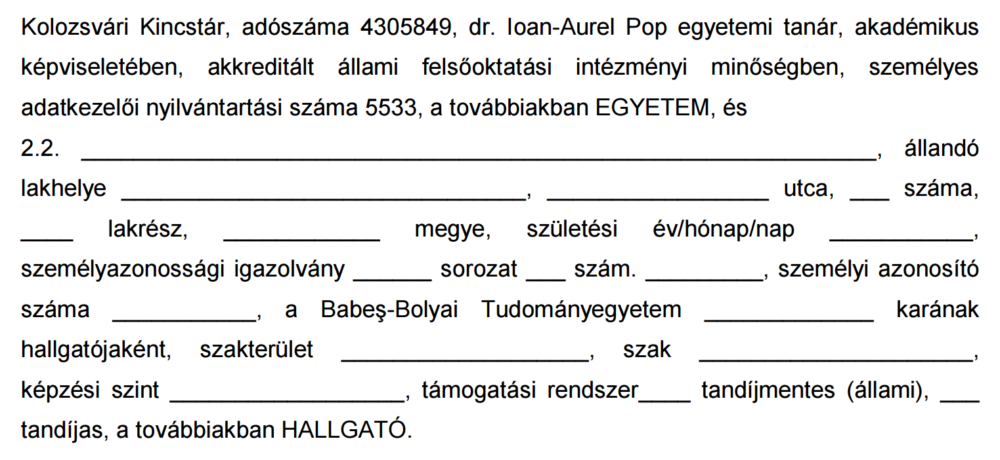
- Formanyomtatvány? Egy adatbázis táblázata!
- Facebook, WhatsApp, Tinder? Adatbázisok!
- RDS nem érti miért nincs net? Adatbázis!
II. Felvonás – 1990 Tim Berners-Lee
Világháló születése – A hálózat a számítógép ~Sun Microsystems
Számítógépek hálózatokba szervezése
- Egyetemek, cégek, magánemberek; önszerveződve
- Protokollok megjelenése: Telnet, E-mail, HTTP
- Esetlegestől állandósult kapcsolatokig
Tárgyak internetének kialakulása
- Egyre kisebb, olcsóbb és okosabb komponensek
- Mindent átható jelenlét (pl. okos égők)
Két világ összecsapása 💥

adatbázis vs. hálózat
Több adatbázis együttműködése
- Láthatatlan adatáramlás cégek között
- Felhasználó érdekeinek képviselése
- Implicit kapcsolat saját gépeinkkel
Jelen gépeink? Drága papírszimulátorok...
- Adatbázisok programozók képmásai
- Formanyomtatványok mint kapcsolatok
- Együttműködés túl drága, túl bürokratikus
Kössük össze az adatbázisokat! (ahm, nem...)
 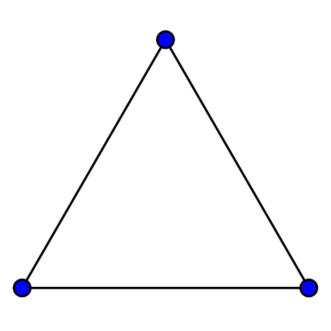
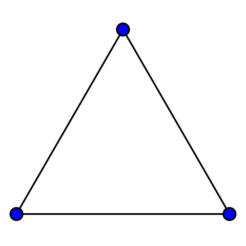
 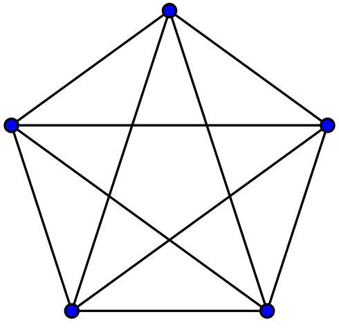
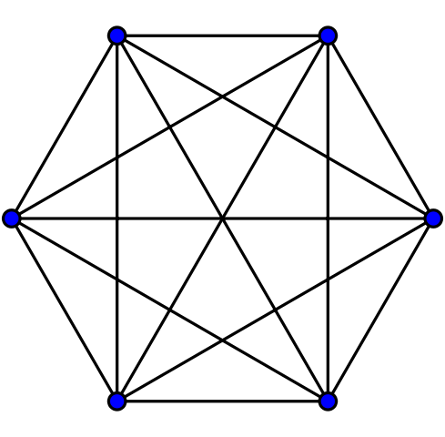
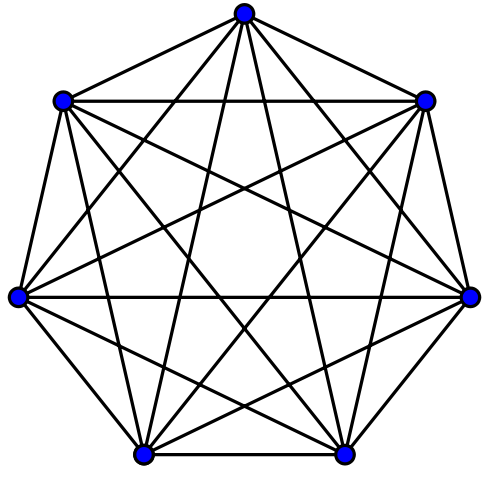
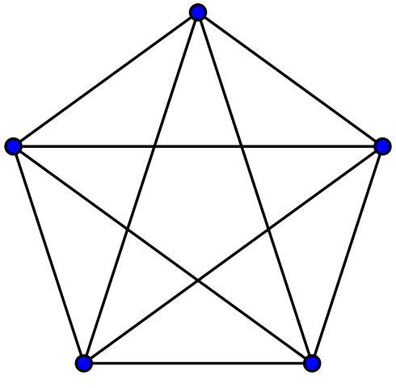
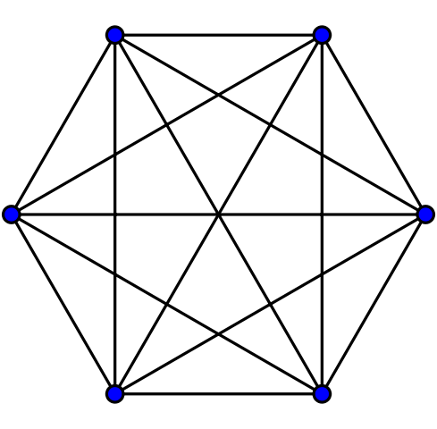
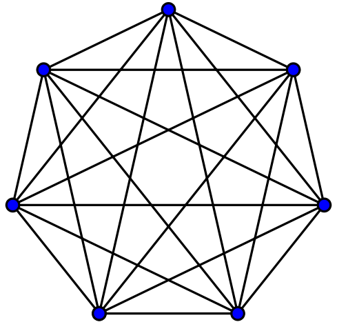
 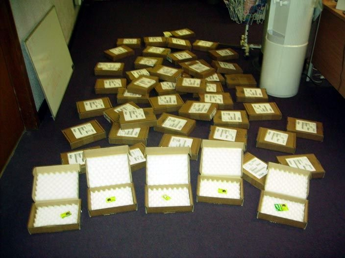
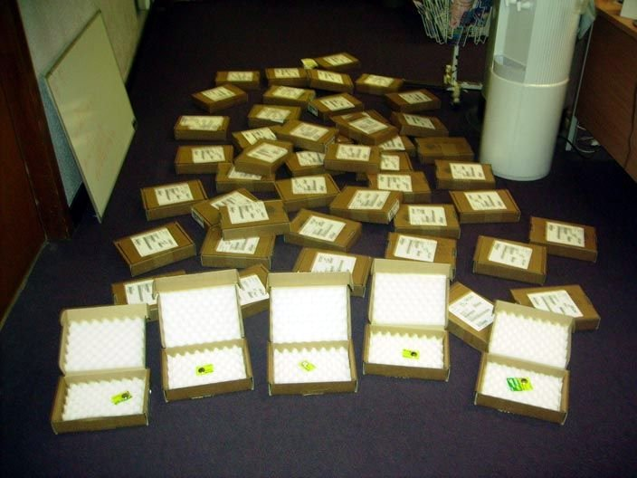
Keresztbe kapcsoljuk, "oszt müxik"
- Szervezet saját adatbázisa? Abszolút igazság
- Másik fél adatbázisa? Véleménynyilvánítás
- Kommunikáció spekulációra redukálódik
Használhatatlan instabilitás
- Apró változtatás észrevétlen hibát eredményezhet
- Gondolkodásmód-beli eltérések, félreértések
- Faktoriálisan növekvő hibalehetőségek
Központosítsuk együttműködéseinket! (ó, jaj...)
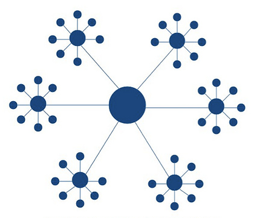


Egy mindenki által megbízott fél közvetítése
- Egyetlen standard, mindenki beszéli (PayPal)
- Önkéntesen előállított természetes monopólium
- Semleges közvetítő helyett politikai és pénzügyi szörny
Kiadtuk magán-, professzionális és pénzügyi életünket. De infrastruktúránkat is!
Protokollok, protokollok, protokollok...
Együttműködés személyes érdekek felett
- Globálisan elfogadott, bárkinek elérhető, decentralizált
- BGP, DHCP, DNS, FTP, IMAP, HTTP, NTP, POP, SMTP, SSL
3 évtized óta stagnálunk! Skype, Slack, WhatsApp?
- Monopóliumhajhászat és elfalazott rendszerek
- Részvényesek és befektetők önkényuralma
- Fény az alagútban: BitTorrent és Wiki (±)

III. Felvonás – 2008 Blockchain
Bitcoin – 7 milliárd dollár értékű véletlen – Internet központi bankja
Akadémiai kísérlet globális konszenzusra
- Peer-to-peer adatbázis, ami előbb-utóbb konvergál
- Minden résztvevő egyenlően megbízhatatlan
- Jobban megéri segíteni, mint támadni (!)
Miért pont pénzügy? Kézzelfogható, közérthető
- Globális adatbázis, hogy kinek mennyi pénze van
- Mégis csak a tulajdonos kezelheti saját pénzét
Bitcoin lelke – Blokklánc-technológia
Kezdeti, közös
állapot
Tranzakciók
hirdetése
Rendezés,
összefésülés
Blokk
hirdetése
Végrehajtás,
új közös állapot
 Ismételjük a végtelenségig...
Ismételjük a végtelenségig...
Blokkok szabályozása – Aranybányászat!? ლ(ಠ_ಠ ლ)
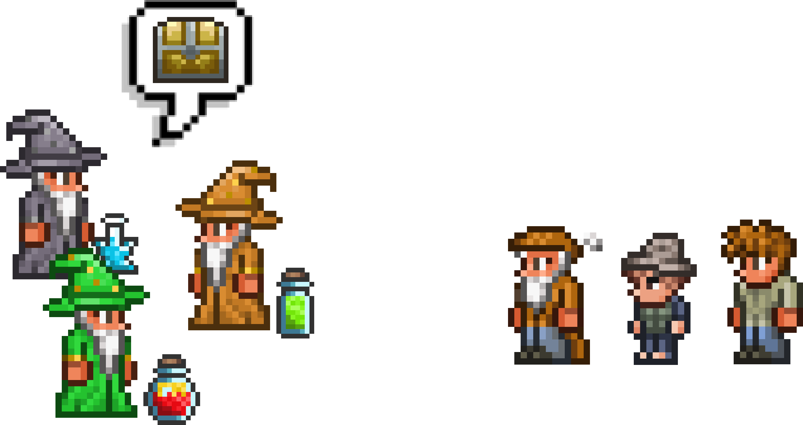
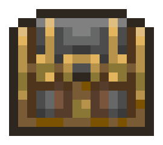
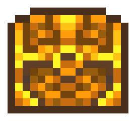
Varázsló ⇔ Node | Lötyi ⇔ Tranzakció | Láda ⇔ Blokk | Bányászat ⇔ Hashelés | Arany díszítés ⇔ 00..0 hash előtag | Egyediségi garancia ⇔ Előző hashre épül
Egy játékos szemszögéből 😋
- Varázslók gyártják főzeteiket, de nincs helyük
- Ládát rendelnek, de félnek a monopóliumtól
- Több ládából viszont nem tudnak választani
Kéne egy megoldás, hogy csak egy láda készüljön el...
- Aranyláda! 😆 Aranyat bányászni nehéz, szerencsére megy 😈
- Egyedi! 😆 Félkész ládát ne lehessen átalakítani a köv. rendelésre 😈
Bitcoin klónok, színes érmék
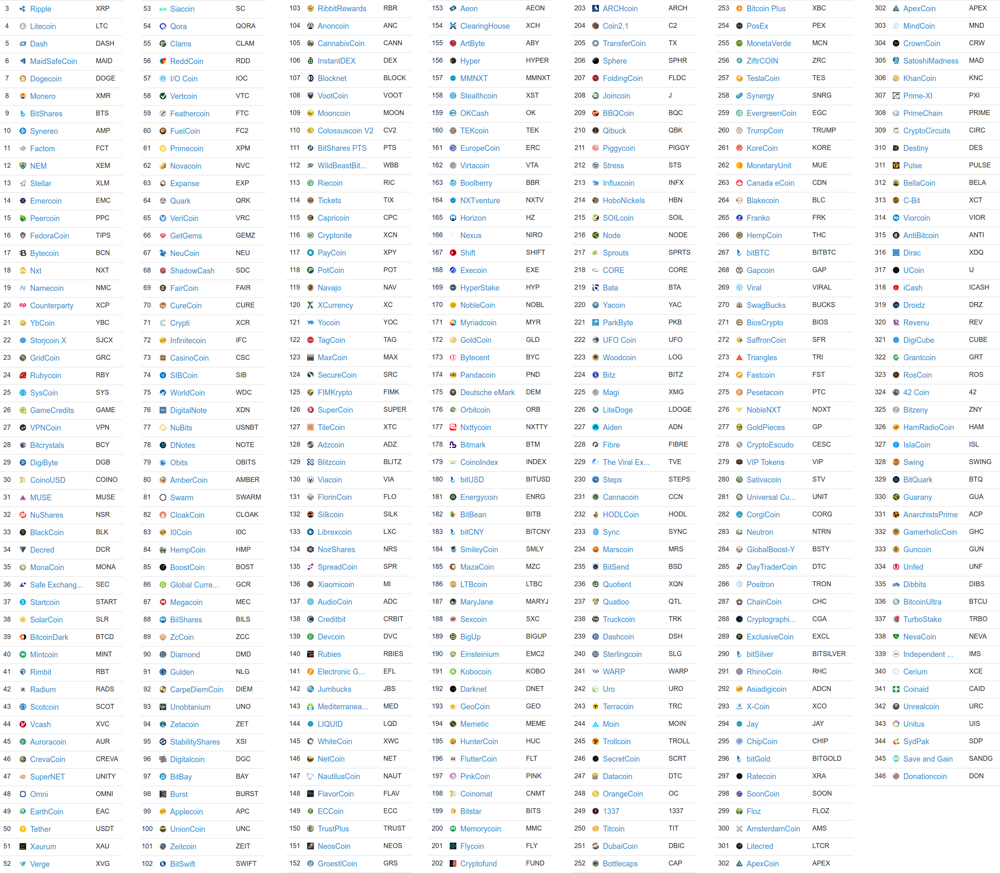
A bitcoin fantasztikus sikert aratott
- Beláthatatlan sok másolat született
- Rengeteg módosított protokoll létrejött
- Hasznosak, de megbízhatatlanok: túl kicsik
Az egymilliárdos kérdés: Össze lehetne-e rakni őket egyetlen hálózatba?
- Általános, alkalmazásfüggetlen adattárolás (megoldható)
- Mindegyiket – jövőbelit is – magában foglaló hálózati protokoll (őőő...)
2015 Ethereum – Turing teljes hálózat
Ethereum – hálózat az adatbázis – hálózat a számítógép
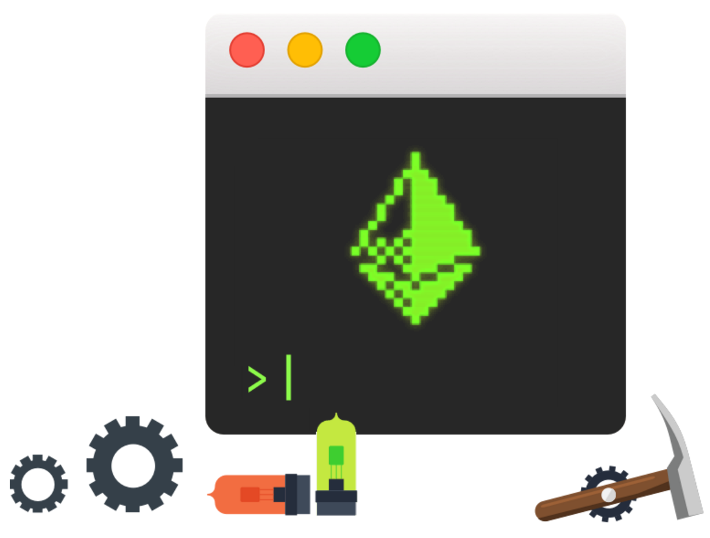
Világ egyetlen globális számítógépe
- Tökéletes gép: nem hibázik, nem áll le
- Univerzálisan elérhető: bárkinek, bárhonnan
- Feltörésbiztos: befolyásolhatatlan, cenzúrázhatatlan
De mire jó? 😅
- Ismeretlen felek közti áthághatatlan egyezségek
- Harmadik fél által megakadályozhatatlan együttműködések
Példa – Közösségi finanszírozás
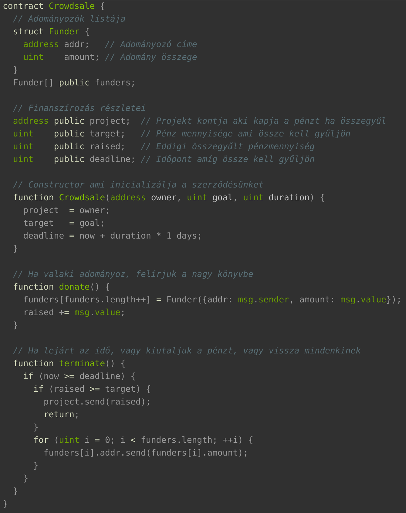

Idegenektől pénzgyűjtés saját projektre
- Meghirdetünk egy gyűjtést fix időkerettel
- Ha összegyűl a teljes összeg, megkapjuk
- Ha nem, mindenki visszakapja a sajátját
Apró programozott szerződés (az ni ⇒)
- Nincs köztes fél, aki kezelési díjat szedjen
- Elég a helyi jogszabályoknak megfelelni
- Egyértelmű és garantált a végkimenet
Korlátok és aktív fejlesztések – Web 3.0
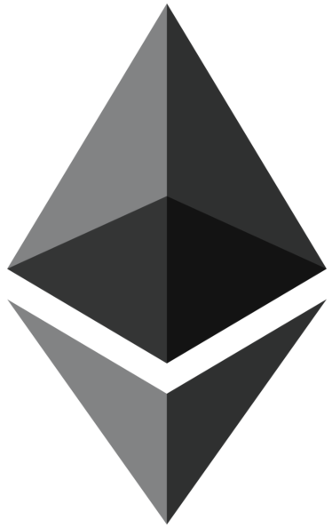
Globális teljesítményben gyenge (20-25 tps)
- Prototípus szintjén x10-x100, kutatás szintjén x10000 gyorsítás (Casper)
Masszív adattárolásra túl költséges a blokklánc
- Pre-alpha állapotú globális file-rendszer készülőben (Swarm)
Nincs valós idejű interakció (15 másodperc átfutási idő)
- Működő, de inaktív globális dark messaging (Whisper)
Köszönöm
Használd a balra és jobbra nyilakat vagy kattints a bal vagy jobb
szélére a jelen diának a diák közötti navigációhoz.
(Nyomj 'H' betűt vagy navigálj, hogy elrejtsd ezt az üzenetet.)